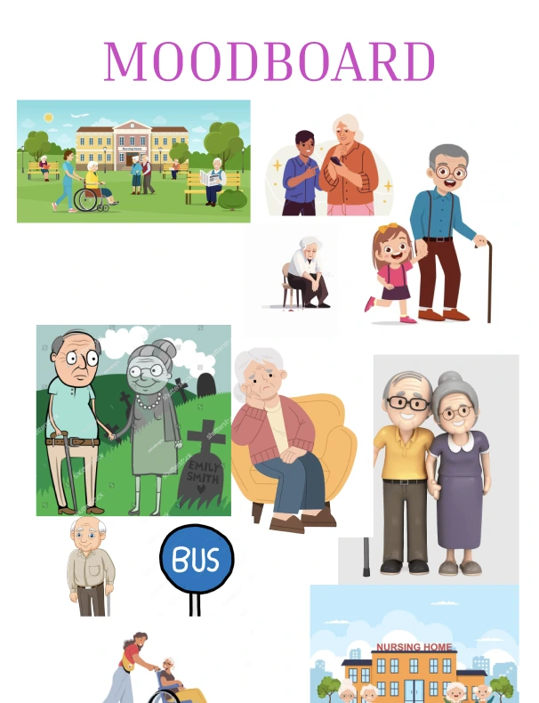
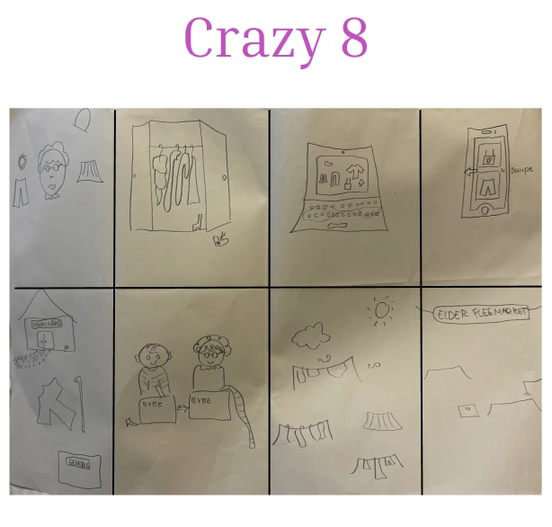
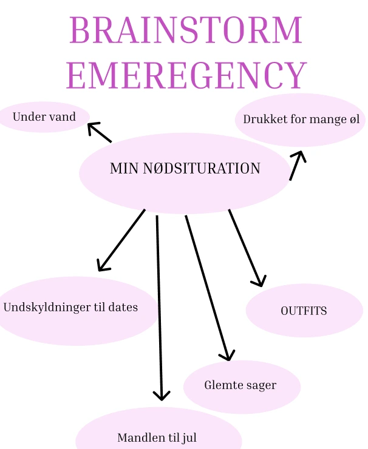
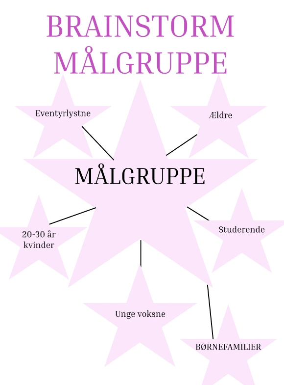
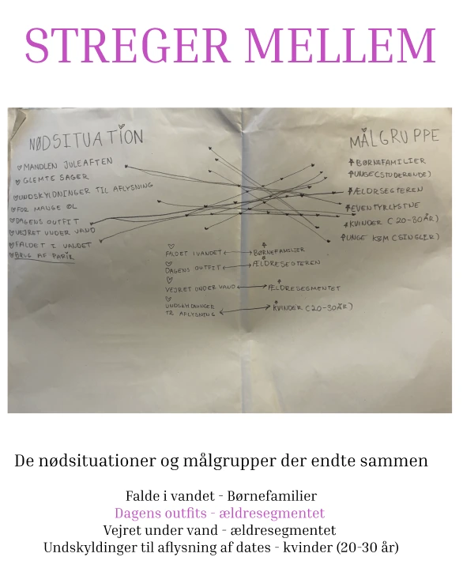

Grundlæggende JS
Dette var mit mest udforskede projekt – udfordrende med SVG-figurer og avanceret arbejde i Adobe Illustrator. Jeg var god til idéprocessen og de nye kreative værktøjer, vi blev vist.
Se Emergency SiteLøsning
Jeg lavede et emergency-site, hvor vi skulle implementere grundlæggende JavaScript-funktioner. Fokus var på interaktioner, layout og effekter.
Proces
Startede med idéudvikling og moodboard. Eksperimenterede med SVG-figurer, små JS-scripts og hover-effekter. Testede designet på forskellige skærmstørrelser for responsivitet. Jeg havde svært ved at få en forståelse for brugen af værktøjet ADOBE Illustrator, og den grundlæggende viden og forståelse bag SVG-figurer, animationer og kodning der hørte til denne proces.
Læring
Jeg lærte hvordan JavaScript kan tilføje interaktivitet, og hvordan man kombinerer det med HTML og CSS. Projektet styrkede min forståelse for kreative værktøjer og UX/UI.





